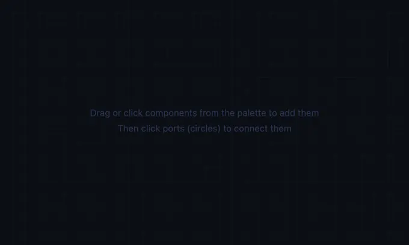

Electro-Pneumatic Circuit Simulator
3D Model — Electro-Pneumatic Circuit Simulator
Free electro-pneumatic circuit simulator with 69 components. Build circuits with solenoid valves, relays, and pneumatic actuators. No signup required!
Drag & Drop • Dual-Domain • 69 Components • Solenoids • Relays • Sensors — Simulate • Explore • Practice • Quiz
📈 Displacement Diagram — each cylinder's stroke over time (A+ B+ A− B− sequence)
1 Overview
Welcome to the Electro-Pneumatic Circuit Simulator — a free, browser-based Festo-style dual-domain simulator that combines electrical control circuits with pneumatic power systems. Designed for engineering students, automation technicians, vocational instructors, and maintenance engineers, this tool teaches how 24V DC electrical signals control pneumatic actuators via solenoid valves, relays, timers, and sensors. Build, simulate, and learn complete electro-pneumatic circuits — no installation, no signup, no licensing fees.
2 Dual-Domain Architecture & Air Cycle
This simulator operates across two domains simultaneously, just like real Festo and SMC industrial equipment:
- Pneumatic domain (cyan): compressed air flows from compressor → tank → FRL → valves → cylinders. Exhaust exits through silencers to atmosphere.
- Electrical domain (orange): 24V DC signals flow from power supply through switches, relays, and timers to solenoid valve terminals (Y+/Y−).
- Cross-domain link: solenoid valves (5/2 Single Sol., 5/2 Double Sol., 3/2 Solenoid) have both pneumatic ports and electrical terminals built in. When 24V reaches the Y+/Y− terminals, the valve spool shifts — no separate linking needed.
3. Getting Started
Select components from the collapsible palette on the left. The palette has 11 pneumatic categories (50 components) plus an Electrical Control category (12 components). Click a component to auto-place or drag it onto the canvas. Click cyan port circles (pneumatic) or orange port squares (electrical) to create connections. The simulator enforces domain separation — you cannot connect an electrical port to a pneumatic port.
4. Complete Air Cycle
Every pneumatic circuit should follow the standard Festo air path:
- Air Supply (compressor) → generates compressed air at set pressure
- Air Tank (receiver) → stores air, buffers pressure drops during demand
- FRL Unit (filter-regulator-lubricator) → cleans, regulates, and lubricates air
- Directional Control Valve (5/2 solenoid) → routes air to cylinder ports
- Cylinder (actuator) → converts air pressure into linear motion
- Silencers on exhaust ports → reduce noise as air vents to atmosphere
In pneumatics, exhaust air is vented to atmosphere (unlike hydraulics where oil returns to a tank). The silencers represent the end of the air cycle.
3 Component Library (69 Components)
Pneumatic Components (53)
Air Supply (2): Compressor and receiver tank. The tank is a working receiver: it charges from the line (watch the fill level and pressure label) and takes over as an amber reserve supply if the compressor is deleted while running. Air Treatment (3): Filter, regulator, FRL unit. Directional Valves (24): 2/2 on/off, 3/2 (push button, roller, idle return, plunger, solenoid), 5/2 (single solenoid, double solenoid, pilot), 5/3 double solenoid (spring-centred) plus 5/3 closed/exhaust/pressure centre and pilot variants, 4/3. All DCVs show ISO 1219 internal arrows. Flow Control (3): One-way flow control, throttle, quick exhaust. Pressure Control (2): Relief valve, sequence valve. Logic (4): Check, pilot-operated check (blocks reverse flow until port Z is pressurised — the standard cylinder lock; the selectable pilot area ratio 3:1 / 4:1 / 5:1 sets how much pilot pressure is actually needed, roughly blocked pressure ÷ ratio, exactly as on a real unlockable check valve), shuttle (OR), AND valve. Actuators (4): Single-acting, double-acting, rodless cylinder, rotary actuator. Vacuum (2): Venturi generator, suction cup. Timing (2): On-delay, off-delay pneumatic timers. Measurement (3): Pressure gauge, flow meter, proximity sensor. Sensors (2): Pneumatic limit switch NC and NO — roller-lever trip valves that switch an air line from the linked cylinder's stroke position, the all-pneumatic counterpart to the electrical Limit Switch. They are modelled as proper 3/2 valves (ports 1, 2, 3), not 2/2: the exhaust port 3 is what vents the signal line when the roller releases, so a downstream pilot actually resets. The trip point runs 0–100 % and “Trips When” selects an extended-end (a1) or retracted-end (a0) switch. Utility (2): Silencer, T-connector.
Electrical Components (16)
| Component | Function |
|---|---|
| 24V DC Supply | Power source for all electrical components |
| Push Button (NO) | Normally open — passes current only when pressed. Click and hold during simulation; Shift+click latches it. A button tagged as part of the Two-Hand Pair refuses to latch — latching a two-hand start button is precisely the tie-down EN 574 forbids. |
| Push Button (NC) | Normally closed — passes current until pressed (used for Stop buttons). |
| Toggle Switch | Latching on/off switch. Click to toggle state. |
| Relay (SPDT) | Coil (A1/A2) + changeover contact (COM/NO/NC). Give the coil a label (K1–K4). When it energises, COM connects to NO. Supports self-holding circuits. |
| Relay Contact | Auxiliary contact driven by a labelled coil (K1–K4), set NO or NC. Drop as many as you like on any rung — this is how one relay drives several contacts (e.g. K1 lights a lamp on NO while interlocking another rung on NC). All contacts carrying the same label sit on one armature (IEC 61810-1) and switch simultaneously, so a K1 NO and a K1 NC can never be closed at the same instant. Terminals follow IEC 60947-5-1 marking: NC = 11-12, NO = 13-14. If the referenced coil is not on the sheet, the contact is drawn faulted (greyed, dashed) and conducts in neither position — a missing K-coil must never leave an NC stop contact welded closed. |
| Timer Relay (On-Delay) | Contact closes after adjustable delay (0.5–30s) once coil is energised. Resets when coil de-energises. |
| Timer Relay (Off-Delay) | Contact stays closed for adjustable time after coil de-energises. |
| Counter | Counts rising edges on its Cnt coil; the output contact (COM/NO) latches closed once the count reaches the preset. The count itself keeps rising past the preset (real IEC counters only latch the output, they do not stop counting). Energise the Rst coil to reset to zero. Use for “stop after N cycles” exercises. |
| Solenoid Coil | Stand-alone coil that drives a solenoid valve. Leave “Linked Valve ID” at 0 to auto-drive the nearest solenoid valve (the label under the symbol shows which, prefixed “~” when auto-linked), or enter a specific valve ID. Drives Side selects Y1 or Y2, so two coil symbols can operate the two ends of a 5/2 double-solenoid or a 5/3 double-solenoid valve. |
| Pressure Switch | Pneumatic P-In port + electrical contact. Trips at the threshold and resets one switching differential (hysteresis, default 0.5 bar) below it, like a real EN 60947-5-1 / FESTO PEV switch — without it the contact chatters at the setpoint. Terminals follow IEC 60947-5-1 (NC = 11-12, NO = 13-14). Must connect P-In to a pressurised pneumatic line. |
| Limit Switch | Trips when the linked cylinder reaches the trigger position. The trigger runs the full 0–100 % and Trips When chooses the direction: at / past trigger for an extended-end switch (a1 / 1B2) or at / before trigger for a retracted-end switch (a0 / 1B1) — so an A+/A− sequence with retract confirmation can be built. Auto-detects the nearest cylinder within range, or set “Linked Cyl ID”. Set NO or NC; the drawn contact always shows the conducting state. |
| Reed Switch | Magnetic position sensor (B0/B½/B1). Closes only while the piston is within a window of the chosen position (retracted, mid-stroke, or extended) — unlike a limit switch which stays closed past its trip point. |
| Indicator Lamp | Lights up (green/red/yellow) when energised. Use for status feedback. |
| Buzzer | Audible signal device — sounds a tone while energised. Use for alarms and end-of-cycle signals. |
| Emergency Stop | Drawn as the IEC 60617 circuit symbol — an NC contact with the mushroom actuator and the mechanical-latch marker, not a pictogram — so it reads as a contact on a schematic. Click to trip. It then latches mechanically (ISO 13850 §4.1.4): a second plain click will not release it, you must Shift+click (the twist / pull of a real mushroom head). Always wire in series with the main power line. |
Reference designations (EN 81346). Instances are auto-numbered on the canvas: S for manual and position switches (push buttons, toggle, E-stop, limit switches), B for converting sensors (pressure switch, reed switch), K for relay coils, Y for solenoids, H for signalling lamps and P for indicating devices (counter, buzzer) — so a finished sheet reads S1, S2, K1, Y1, H1, P1 like a real EN 60204-1 schematic.
Safety diagnostics. Run Circuit also checks: a relay contact pointing at a coil that does not exist; two relays sharing one coil label; two start buttons wired in series without an EN 574 two-hand pair; an E-stop upstream of a bistable 5/2 double-solenoid valve (the spool holds its last position, so cutting control power does not retract the cylinder — you need a dump valve or a spring-return / exhaust-centre valve); both solenoids of a double valve commanded at once (a wiring fault needing a mutual interlock); and a relay chain that fails to settle (race / oscillation). Pressing Stop clears every coil, latch and momentary operator and returns spring-return valves to normal, so a self-holding circuit can never re-latch by itself on the next Run (EN 60204-1 §9.2.5.4, no unexpected restart). A bistable double-solenoid valve is deliberately left where it is, because that is what a real one does.
6. How Solenoid Valves Work (Festo Style)
In this simulator, solenoid valves (5/2 Single Sol., 5/2 Double Sol., 5/3 Double Sol., 3/2 Solenoid) have built-in electrical terminals (Y+ and Y−) shown as orange square ports. You do not need a separate solenoid coil component — the coil is integrated into the valve, just like real Festo equipment. The 5/3 Double Sol. is spring-centred: Y1 energised → Extend, Y2 energised → Retract, neither → the spool springs back to the closed centre and the cylinder holds position.
- Wire 24V from the power supply through switches/relays to the valve’s Y+ terminal
- Connect the valve’s Y− terminal back to the power supply 0V
- When 24V reaches Y+, the valve spool shifts (energised position)
- When power is removed, the spring returns the valve to normal position
4 Pre-Built Circuits & Simulation
Each circuit includes the complete pneumatic air path (Compressor → Tank → FRL → Valve → Cylinder + Silencers) and the electrical control circuit:
| Circuit | Description | How to Test |
|---|---|---|
| Direct Solenoid | Push button (NO) directly energises 5/2 valve solenoid | Click PB to extend, click again to retract |
| Self-Holding | Relay K1 latches via its own NO contact feeding back to coil. Start (NO) to latch, Stop (NC) to unlatch | Click Start → cylinder extends and holds. Click Stop → retracts |
| Auto Return | PB extends cylinder. Limit switch at 90% extension lights indicator lamp | Click PB → extend → lamp lights green at full stroke |
| Pressure Dep. | PB energises valve A. Pressure switch on cyl A line (≥4 bar) triggers valve B | Click PB → cyl A extends → pressure switch closes → cyl B extends |
| Time Delayed | Hold PB to energise on-delay timer coil. After 3s delay, timer NO closes → valve energises | Hold PB for 3 seconds → cylinder extends after delay |
| Two-Hand Safety | Two separately labelled relays (K1 and K2) with their NO contacts in series. Both PBs are tagged as the EN 574 pair, so they must be pressed within 0.5 s of each other and neither can be Shift-latched | Press both PBs → cylinder extends. Wait >0.5 s between them → tie-down violation, the later button is released. Release either → retracts |
| Sequential A+B+ | PB → cyl A extends. LS-A triggers cyl B. LS-B lights indicator | Click PB → A extends → B extends → lamp lights |
| Emergency Stop | E-stop (NC) in series with all power. Lamp goes dark when tripped | Click PB → extend. Click E-stop → everything de-energises. It latches — Shift+click to twist-release |
| Multi-Contact Relay | One K1 coil driving three contacts: its own integrated NO contact self-holds the coil, a labelled K1 NO auxiliary drives the valve and the running lamp, and a K1 NC auxiliary sounds the idle buzzer. A pilot-operated check valve locks the load on the cap line | Click Start → buzzer stops, lamp lights, cylinder extends and holds. Click Stop → drops out and the buzzer returns. The NO and NC aux never close together |
| Batch Counter | The cylinder cycles continuously between reed switches B0 and B1 while K1 is latched. B1 clocks the counter; at the preset the counter output latches, K2 picks up and its NC contact breaks the run latch | Click Start → cylinder cycles. After 3 strokes the batch stops and the red lamp lights. Press Reset, then Start again |
8. Running Simulations
Press Run Circuit to start. The simulator validates your circuit and warns about common mistakes (missing air supply, unconnected pressure switch, etc.). During simulation:
- Pneumatic flow: animated blue particles show air flowing from supply through valves to cylinders
- Electrical signals: orange wires glow bright when energised, dim/dashed when off
- Click switches: push buttons (NO/NC), toggle switches, and E-stop can be clicked during simulation
- Solenoid valves shift automatically when their Y+/Y− terminals receive 24V
- Sensors respond: limit switches detect cylinder position, pressure switches detect line pressure
- Readouts: supply pressure, flow rate, cylinder force/speed, supply voltage, active solenoid count
9. Component Manipulation
- Rotate: Select + R or Rotate button for 90° clockwise rotation
- Duplicate: Right-click → Duplicate, or D
- Delete: Delete or Backspace
- Undo / Redo: Ctrl+Z / Ctrl+Shift+Z
- Properties: Select a component to view/edit its parameters (pressure, delay, threshold, etc.). Every slider is paired with a type-in number box for exact values — press Enter to commit; out-of-range values clamp automatically.
- Units: the SI / Imperial toggle in the canvas toolbar converts every readout (bar ↔ psi, NL/min ↔ scfm, N ↔ lbf, mm/s ↔ in/s). All calculations stay SI internally; voltage is universal.
- Cylinder Speed: compressor flow is quoted in normal litres (NL/min — free air at atmospheric pressure), but the air that fills the cylinder is compressed to line pressure, so the volumetric flow at the piston is QN ÷ (pgauge + 1). The readout is v = Qactual ÷ A: 200 NL/min at 6 bar into a 50 mm bore gives 200/7 = 28.6 L/min over 1963 mm² ≈ 242 mm/s, not 1698. Forgetting the ÷(p+1) step overstates piston speed sevenfold and undersizes the compressor. The on-screen stroke is driven by this same number, so you can time it with a stopwatch: a 150 mm stroke at 242 mm/s takes about 0.6 s.
5 Explore, Practice & Quiz
Browse 14 electro-pneumatic concepts across four categories: Fundamentals (electro-pneumatic basics, solenoid operation, relay logic, sensor types), Components (5/2 single & double solenoid, pressure switch, timer relay), Circuits (self-holding, auto-return, sequential, emergency stop), and Applications (pick & place, pneumatic press with safety). Each concept includes formulas, worked examples, diagrams, and practical tips.
11. Practice Mode
Solve 12 types of randomised problems: solenoid coil power (P=V×I), cylinder force with back-pressure, air consumption per cycle, timer delay settings, pressure switch thresholds, cable sizing, friction force, cycle time, compressor capacity, relay power, cylinder speed, and energy consumption. Step-by-step solutions provided.
12. Quiz Mode
5 randomly selected questions from a pool of 15 (mix of multiple-choice and numeric). Covers solenoid valve port numbering, relay self-holding, pressure switch function, timer types, E-stop safety requirements, force calculations, and solenoid power.
6 Canvas Tools, Zoom/Pan & Annotations
Annotation Toolbar
The mark bar above the canvas provides drawing and annotation tools:
- Move/Select (✥): Default mode. Click annotations to select, drag to move, corner handles to resize.
- Sketch (✏): Freehand drawing with pressure sensitivity. Choose color and width from the dropdown. Stays active after each stroke for continuous drawing.
- Shape (▭): Draw rectangles, circles, ellipses, arrows, lines, double arrows, or text labels. Shapes auto-exit to Move mode after drawing.
- Clear (🧹): Clear all annotations, sketches only, or shapes only.
- Toggle (👁): Show/hide all annotations without deleting them.
Zoom & Pan
- Ctrl + Scroll Wheel: Zoom towards cursor position
- Pinch (touch): Two-finger pinch to zoom and pan simultaneously
- Zoom toolbar (bottom-left): +/− buttons, pan mode toggle, reset view, fit all components
- Pan mode: Press H or right-click empty canvas to toggle. Drag to pan. Press Esc to exit.
- Ctrl + Drag: Pan without entering pan mode
Fullscreen
Click the ⚶ button (top-right of canvas) to enter fullscreen mode with the full palette, toolbar, and readouts visible. Press Esc or click ✕ to exit.
Export
Click the 📷 button (bottom-right of canvas) to export the current canvas view as a PNG image with watermark.
7 Shortcuts & Tips
| Key | Action |
|---|---|
| Ctrl+Z | Undo last action |
| Ctrl+Shift+Z / Ctrl+Y | Redo |
| R | Rotate selected component 90° |
| D | Duplicate selected component |
| Delete / Backspace | Delete selected component or connection |
| Escape | Exit pan mode / cancel connection / close dialog |
| Space | Toggle simulation run/stop |
| H | Toggle pan mode (drag to pan) |
| Ctrl++ | Zoom in |
| Ctrl+− | Zoom out |
| Ctrl+0 | Reset zoom and pan |
| Ctrl+1 | Fit all components in view |
| Right-click (empty area) | Toggle pan mode |
| Ctrl+Scroll | Zoom towards cursor |
Tips & Best Practices
- Always build the complete air path: Compressor → Tank → FRL → Valve → Cylinder → Silencers
- Always include an Emergency Stop (E-stop) in series with the main 24V power line
- Use indicator lamps after the E-stop — they should go dark when E-stop is tripped
- For latching circuits, use self-holding relays: wire K1 NO back to K1 A1 (coil), with a Stop button (NC) in series
- Connect the pressure switch P-In port to a pressurised pneumatic line — it won’t work without a pneumatic connection
- Set Linked Cyl ID on limit switches for reliable detection, or place them near the target cylinder for auto-detection
- Use normally-closed (NC) contacts for safety functions — the circuit fails safe if a wire breaks
- Add silencers to all valve exhaust ports to reduce noise
- Use meter-out flow control (not meter-in) for smooth cylinder speed control
- Standard industrial settings: 6 bar pneumatic supply, 24V DC electrical supply
Electro-Pneumatic Circuit Simulator — Build and Learn Industrial Control Systems Online

This free electro-pneumatic circuit simulator lets you design, build, and simulate dual-domain circuits that combine electrical control with pneumatic power — directly in your browser. With 69 drag-and-drop components spanning both domains, you can construct complete industrial automation circuits using solenoid valves, relays, timer relays, sensors, push buttons, and all standard pneumatic actuators. Watch how electrical signals flow through relay logic to energise solenoid coils, which in turn shift directional control valves and drive pneumatic cylinders. This electro-pneumatic trainer provides hands-on experience with the same circuit topologies used in real-world manufacturing, packaging, and assembly automation.
What is Electro-Pneumatic Control?
Electro-pneumatic control is the industry-standard method for operating pneumatic actuators in modern automation. Instead of using pneumatic pilot signals to shift valves (as in pure pneumatic control), electro-pneumatic systems use a 24V DC electrical control circuit to drive solenoid-actuated valves. The electrical circuit handles all the logic — push buttons initiate actions, relays implement self-holding and interlocking, timer relays provide time delays, and limit switches detect cylinder positions. The pneumatic circuit provides the power — compressed air at 4–8 bar flows through directional control valves to extend and retract cylinders. This separation of control (electrical) and power (pneumatic) offers significant advantages: faster signal transmission over long distances, easier implementation of complex sequential and safety logic, seamless integration with PLCs and industrial sensors, and standardised wiring practices per IEC 61131.
Key Components in Electro-Pneumatic Systems
The solenoid valve is the bridge between the electrical and pneumatic domains. A solenoid coil converts an electrical signal into a magnetic force that shifts the valve spool, redirecting compressed air to the desired actuator port. Single-solenoid 5/2 valves use a spring return and are the most common in simple circuits, while double-solenoid 5/2 valves remain in their last switched position (memory function). Relays are the workhorses of the control circuit — they amplify and distribute signals, implement self-holding (latching) logic, and provide multiple contacts from a single input. Timer relays add time-based control, enabling on-delay (wait before acting) and off-delay (act then wait) sequences. Limit switches and pressure switches provide feedback from the pneumatic domain back into the electrical control circuit, enabling automatic sequencing and pressure-dependent operations. Emergency stop buttons are mandatory safety devices that instantly de-energise all solenoids, causing spring-return valves to exhaust cylinders to a safe position.
Who Uses This Electro-Pneumatic Simulator?
This simulator is designed for engineering education (Technical and Vocational Education and Training) students studying mechatronics, industrial automation, and fluid power technology. Vocational instructors use it as a classroom teaching tool to demonstrate relay logic, solenoid valve operation, and safety circuit design before students work with physical equipment. Maintenance engineers use it to plan and troubleshoot electro-pneumatic circuits in production lines. Automation engineers prototype new control sequences and verify logic before commissioning. The four learning modes — Simulate (build and run circuits), Explore (study concepts and theory), Practice (solve calculation problems), and Quiz (test your knowledge) — provide a comprehensive educational pathway from understanding individual components to designing complete automated systems. With 8 pre-built template circuits ranging from basic direct solenoid control to multi-cylinder sequential operations with emergency stop, learners can progressively build their expertise in industrial electro-pneumatic circuit design.
Explore Related Simulators
If you found this electro-pneumatic circuit simulator helpful, explore our Pneumatic Circuit Simulator for pure pneumatic control circuits, Hydraulic Circuit Simulator for high-pressure fluid power systems, Ohm's Law Simulator for fundamental electrical calculations, and DC Motor Simulator for electric motor characteristics and control.